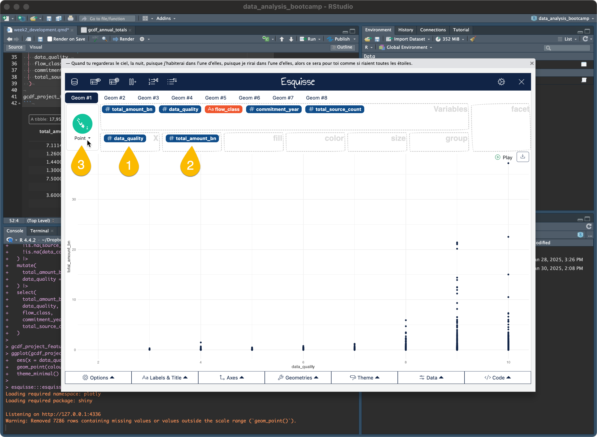
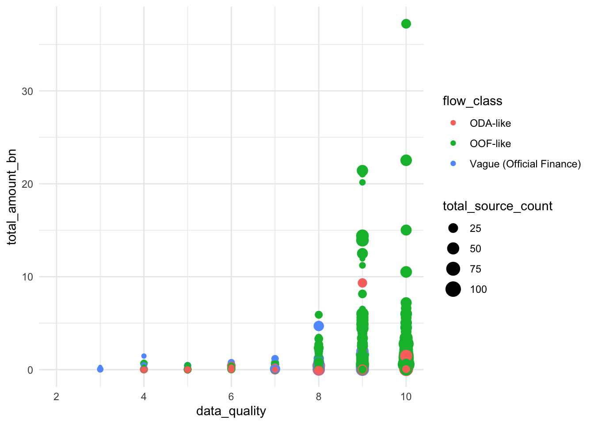

pak::pkg_install("esquisse")3 Week 2: Make Cool Charts, Right Away (Pre-Class)
3.1 Overview
This week we’ll learn how to create compelling visualizations with {ggplot2}. Instead of starting with theory, we’ll dive right in using Esquisse, a point-and-click interface. By making increasingly complex charts and examining the code they generate, you’ll start to understand how ggplot2 works.
3.2 Learning Objectives
By completing this pre-class work, you will be able to: 1. Create basic visualizations using Esquisse’s point-and-click interface 2. Understand how aesthetic mappings control visual features 3. See how ggplot2 code relates to visual choices 4. Begin to read and understand ggplot2 code
3.3 Setup
First, let’s install Esquisse, load our libraries, and prepare our data.
Create a quarto file to use as a lab notebook, and save it in week_2/R.
Install esquisse:
Next we’ll load the packages we’ll be using in this session.
library(tidyverse) # Data analysis tools, including ggplot2── Attaching core tidyverse packages ──────────────────────── tidyverse 2.0.0 ──
✔ dplyr 1.1.4 ✔ readr 2.1.5
✔ forcats 1.0.0 ✔ stringr 1.5.1
✔ ggplot2 3.5.1 ✔ tibble 3.2.1
✔ lubridate 1.9.4 ✔ tidyr 1.3.1
✔ purrr 1.0.2
── Conflicts ────────────────────────────────────────── tidyverse_conflicts() ──
✖ dplyr::filter() masks stats::filter()
✖ dplyr::lag() masks stats::lag()
ℹ Use the conflicted package (<http://conflicted.r-lib.org/>) to force all conflicts to become errorslibrary(chinadevfin3) # GCDF 3.0 data
library(esquisse) # ggplot2 point-and-click add-in3.4 Create An Initial Dataset
In week three you will how to transform your data. For now, we’ll do it for you. If you’re curious what’s happening in the code below, paste it into an LLM and ask it to explain what is happening step-by-step.
# Helper function from Week 1
to_billions <- function(amount) {
amount / 10^9
}
# Create dataset for exploring project characteristics
gcdf_project_features <- get_gcdf3_dataset() |>
filter(
recommended_for_aggregates == "Yes",
!is.na(source_quality_score),
!is.na(data_completeness_score)
) |>
mutate(
total_amount_bn = to_billions(amount_constant_usd_2021),
data_quality = source_quality_score + data_completeness_score
) |>
select(
total_amount_bn,
data_quality,
flow_class,
commitment_year,
total_source_count
)3.5 Building Your First Visualization
Let’s explore relationships between project size, data quality, and other features by building a visualization step by step. We’ll use Esquisse to create the plot visually, then examine the code it generates to understand how ggplot2 works.
3.5.1 Step 1: Basic Scatter Plot
- In RStudio, click Addins → ggplot2 builder

- Select
gcdf_project_featuresas your dataset
- Create a basic scatter plot:
- Drag
data_qualityto x-axis - Drag
total_amount_bnto y-axis - Click “Point” in the geometry menu

- Click the “Code” button at the bottom and copy the code

Try running this code in R:
ggplot(gcdf_project_features) +
aes(x = data_quality, y = total_amount_bn) +
geom_point(colour = "#112446") +
theme_minimal()Warning: Removed 7286 rows containing missing values or values outside the scale range
(`geom_point()`).Now that you understand how Esquisse works, let’s build up our visualization step by step. Just follow the instructions at each stage, and remember to export and run the code to see how ggplot2 syntax matches your visual choices.
3.5.2 Step 2: Add Color by Flow Class
In Esquisse, drag flow_class to the color box. Export and examine the new code:
ggplot(gcdf_project_features) +
aes(
x = data_quality,
y = total_amount_bn,
colour = flow_class
) +
geom_point() +
scale_color_hue(direction = 1) +
theme_minimal()Warning: Removed 7286 rows containing missing values or values outside the scale range
(`geom_point()`).
Notice how color = flow_class was added inside aes(). In ggplot2, aes() is where we map data variables to visual properties.
3.5.3 Step 3: Size by Source Count
Add a third dimension to our visualization by mapping point size to the number of sources:
- Drag
total_source_countto the size box - Export and examine the code:
ggplot(gcdf_project_features) +
aes(
x = data_quality,
y = total_amount_bn,
colour = flow_class,
size = total_source_count
) +
geom_point() +
scale_color_hue(direction = 1) +
theme_minimal()Warning: Removed 7286 rows containing missing values or values outside the scale range
(`geom_point()`).
Our visualization now shows several relationships simultaneously:
- Data quality (x-axis)
- Project size (y-axis)
- Number of sources (point size)
- Flow class (color)
3.5.4 Step 4: Dealing with Overlapping Points
Looking at our plot, you can see many overlapping points. This happens because our data quality scores are whole numbers (0-10), so many projects have exactly the same score. We can fix this by switching to geom_jitter():
ggplot(gcdf_project_features) +
aes(
x = data_quality,
y = total_amount_bn,
colour = flow_class,
size = total_source_count
) +
geom_jitter() +
scale_color_hue(direction = 1) +
theme_minimal()Warning: Removed 7286 rows containing missing values or values outside the scale range
(`geom_point()`).
What is jittering?
geom_jitter() adds a small amount of random noise to each point’s position. This helps us see overlapping points without changing the fundamental patterns in our data.
3.5.5 Step 5: Adding Clear Labels
Now let’s make our plot more informative with proper labels. In the “Labels & Title” tab:
- Set Title to: “Larger Chinese Development Projects Have Better Documentation”
- Set Y-axis to: “Project Size (2021 USD, Billions)”
- Set X-axis to: “Data Quality Score”
- Set Color legend to: “Flow Class”
- Set Size legend to: “Number of Sources”
Export and run the code:
ggplot(gcdf_project_features) +
aes(
x = data_quality,
y = total_amount_bn,
colour = flow_class,
size = total_source_count
) +
geom_jitter() +
scale_color_hue(direction = 1) +
labs(
x = "Data Quality Score",
y = "Project Size (2021 USD,
Billions)",
title = "Larger Chinese Development Projects Have Better Documentation",
color = "Flow Class",
size = "Number of Sources"
) +
theme_minimal()Warning: Removed 7286 rows containing missing values or values outside the scale range
(`geom_point()`).
3.5.6 Step 6: Making Project Sizes More Visible
Our plot has a problem: the huge range in project sizes (from millions to billions) makes it hard to see patterns. Let’s use a log scale for the y-axis:
ggplot(gcdf_project_features) +
aes(
x = data_quality,
y = total_amount_bn,
colour = flow_class,
size = total_source_count
) +
geom_jitter() +
scale_color_hue(direction = 1) +
scale_y_continuous(trans = "log10") +
labs(
x = "Data Quality Score",
y = "Project Size (2021 USD,
Billions)",
title = "Larger Chinese Development Projects Have Better Documentation",
color = "Flow Class",
size = "Number of Sources"
) +
theme_minimal()Warning: Removed 7286 rows containing missing values or values outside the scale range
(`geom_point()`).
Why Use Log Scales?
Log scales are perfect for data that spans several orders of magnitude. They help us see patterns across both small and large values. In development finance, where projects can range from $1 million to $10 billion, log scales are essential for clear visualization.
3.5.7 Step 7: Clean Up the Look
Finally, let’s change the background. In Esquisse’s Theme tab, select “gray”. Here’s our final code:
ggplot(gcdf_project_features) +
aes(
x = data_quality,
y = total_amount_bn,
colour = flow_class,
size = total_source_count
) +
geom_jitter() +
scale_color_hue(direction = 1) +
scale_y_continuous(trans = "log10") +
labs(
x = "Data Quality Score",
y = "Project Size (2021 USD,
Billions)",
title = "Larger Chinese Development Projects Have Better Documentation",
color = "Flow Class",
size = "Number of Sources"
) +
theme_gray()Warning: Removed 7286 rows containing missing values or values outside the scale range
(`geom_point()`).
3.6 Understanding the Grammar of Graphics
What we’ve just created illustrates a powerful idea in data visualization: the Grammar of Graphics. Just as English grammar gives us rules for combining words into meaningful sentences, the Grammar of Graphics gives us rules for combining visual elements into meaningful plots.
Let’s break down our visualization to see how this works:
ggplot(gcdf_project_features) + # 1. Start with data
aes( # 2. Map data to visuals
x = data_quality, # - x position
y = total_amount_bn, # - y position
colour = flow_class, # - color
size = total_source_count # - size
) +
geom_jitter() + # 3. Choose how to display
scale_color_hue(direction = 1) + # 4. Adjust scales
scale_y_continuous(trans = "log10") + # - log scale for y
labs( # 5. Add labels
x = "Data Quality Score",
y = "Project Size (2021 USD, Billions)",
title = "Larger Chinese Development Projects Have Better Documentation",
color = "Flow Class",
size = "Number of Sources"
) +
theme_gray() # 6. Choose overall lookWarning: Removed 7286 rows containing missing values or values outside the scale range
(`geom_point()`).Each element serves a specific purpose:
- Data: The foundation - what we want to visualize
- Aesthetics: How data maps to visual properties (position, color, size)
- Geometries: The shapes used to show the data (points, lines, bars)
- Scales: How values are converted to visual properties
- Labels: Help readers understand the visualization
- Theme: The overall visual style
Think of it like building with LEGOs:
- Your data provides the bricks
- Aesthetics determine how you’ll use each brick
- Geometries are the types of bricks
- Scales adjust the size and arrangement
- Labels explain what you’ve built
- Theme sets the overall style
I’ll draft the connection and reorganize the common tools section to be more task-focused and intuitive:
3.7 The Tip of the Iceberg
Understanding this grammar gives you access to ggplot2’s full power. While we’ve created one visualization, the same grammar can create virtually any plot you need. Here’s a preview of common tools you’ll use:
3.7.1 Chart Types and Their Geometries
Geometries (geom_*) are the shapes we use to represent data. Think of them as different ways to draw your data points. Here are some common ones by task:
Time Series (showing changes over time):
geom_line(): Connect points with lines (for smooth trends)geom_col(): Use bars (for yearly totals)
# Example: Annual lending trends
ggplot(data) +
aes(x = year, y = total_lending) +
geom_line() # or geom_col() for barsDistributions (showing spread of values):
geom_histogram(): Show frequency of valuesgeom_boxplot(): Show median, quartiles, and outliersgeom_density(): Show smooth distribution shape
# Example: Project size distribution
ggplot(data) +
aes(x = amount_constant_usd_2021_bn) +
geom_histogram()Relationships (showing how variables connect):
geom_point(): Scatter plotsgeom_jitter(): Scattered points with small random offsetsgeom_smooth(): Add trend lines
# Example: Project size vs completion time
ggplot(data) +
aes(x = amount_constant_usd_2021_bn, y = implementation_years) +
geom_point()3.7.2 Making Adjustments with Scales
Scales control how your data is converted to visual properties. They’re like the adjustments on a camera:
Numeric Scales:
scale_y_log10(): Handle data spanning many magnitudesscale_x_continuous(limits = c(0, 100)): Set axis rangesscale_size_continuous(): Control how numbers map to point sizes
Color Scales:
scale_color_brewer(): Color-blind friendly palettesscale_fill_manual(): Choose your own colorsscale_color_viridis_d(): Perceptually uniform colors
3.7.3 Setting the Look with Themes
Themes control the overall appearance of your plot, like a visual style guide:
theme_gray(): The ggplot2 default, good for explorationtheme_minimal(): Clean look, great for presentationstheme_classic(): Traditional scientific styletheme_bw(): Black and white, printer-friendly
Choosing the Right Tools
- Use
geom_line()when order matters (like time series) - Use
geom_col()for bar charts - Use
geom_histogram()to see distributions - Use
geom_boxplot()to compare distributions across groups - Use
geom_point()to show x & y relationships - Use
geom_jitter()to show relationships with lots of overlapping points
3.8 Resources for Learning More
The best way to learn ggplot2 is to start creating visualizations for your own work. When you need help, here are some excellent resources:
3.8.1 Quick Reference
- ggplot2 cheatsheet: A two-page visual reference of ggplot2’s most useful features. Keep this handy!
3.8.2 Official Documentation
- Getting Started with ggplot2: Clear introduction to ggplot2’s core concepts
- Function reference: Detailed documentation of every ggplot2 function
3.8.3 In-Depth Learning
- Data Visualization chapter in R for Data Science: Comprehensive introduction with lots of examples
- Beautiful Charts with R & ggplot2: Step-by-step video tutorial by Albert Rapp, perfect if you prefer learning by watching
Learning Strategy
- Start simple - get something on the screen
- Add complexity one layer at a time
- Use the cheatsheet to discover new features
- Look up details in the documentation when needed
3.9 Next Steps
In our class session, we’ll: 1. Review any questions about the grammar of graphics 2. Learn more about themes and scales 3. Practice creating publication-ready visualizations 4. Work on real examples from your own interests in the Chinese development finance data
Remember: The goal isn’t to memorize every option, but to understand the general approach to building visualizations layer by layer.